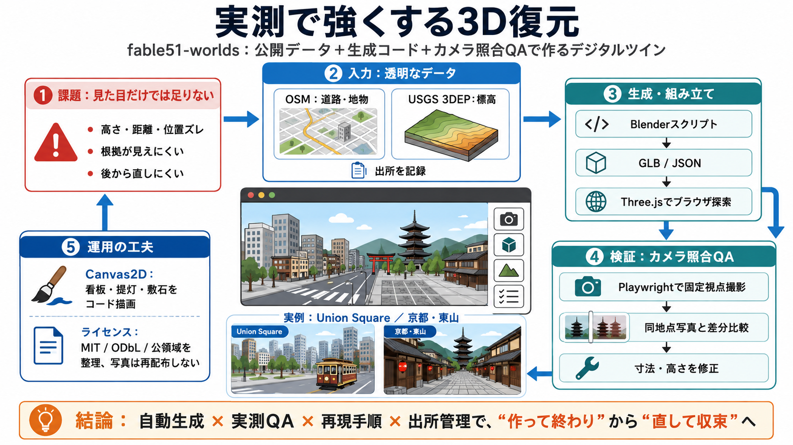

Philo Labs - The Verification Layer for Visual Intelligence
## Our thinking We publish what we learn. Our research spans agentic world models, video understanding and generation, …

## Our thinking We publish what we learn. Our research spans agentic world models, video understanding and generation, …
© 2026 Philo Labs San Francisco [...] expertise that does not naturally cluster in ML research labs. [...] Image 1: Phil…
The concept of digital twins has been in the field for a long time, constantly challenging the specification, modeling, …
Together, these perspectives create a complete digital understanding of the physical world, supporting perception, local…
The 3D city model created by the MLIT is an architecture that functions as a nodal point where the scalability and conne…